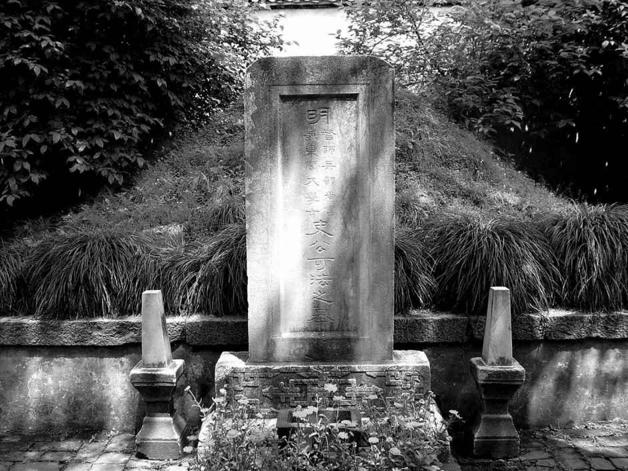

曲终·筵散
由崇祯皇帝壮烈殉国画上句号，并不符合明朝最后一个多世纪的气质。历史老人目光如炬，思维缜密，不允许自己的书写出现这种败笔。南京浮现，朱由崧登场，表面看明祚再续一年，实则是历史老人要为它重新安排结尾——一种与其神韵更加迹近的结尾。

扬州史可法墓。
史可法尸骨无存，义子史德威以其衣冠葬梅花岭。他的意义，以其幕僚张璵若下述评论最恰切：“公居无如何之时，值不可为之地，而极不得已之心。当夫天崩地圯、日月摧冥，不死于城头，而死于乱军。无骨可葬，无墓可封，天也人也？亦公自审于天人之际而为之也！”